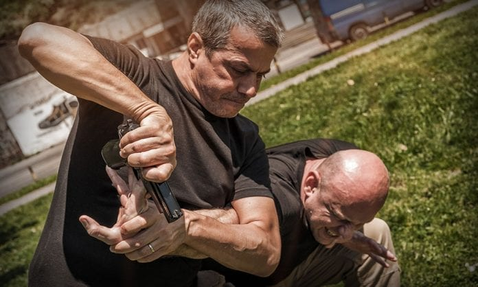

Крав-мага - разработанная в Израиле военная система рукопашного боя, делающая акцент на быстрой нейтрализации угрозы жизни.

История возникновения крав-мага.
Система крав-мага была разработана в 1930-х годах Ими Лихтенфельдом, известным также как Ими Сде-Ор (Сде-Ор — «поле света», перевод фамилии на иврит). Первоначально он обучал своей системе борьбы в Братиславе, чтобы помочь защитить еврейскую общину от нацистских вооружённых формирований. После прибытия в Палестину, Лихтенфельд начал преподавать рукопашный бой в Хагане. После образования в 1948 году Государства Израиль он стал главным инструктором по физической подготовке и рукопашному бою в Школе боевой подготовки Армии обороны Израиля(АОИ). Лихтенфельд прослужил в АОИ до 1964 года, постоянно развивая и совершенствуя свою систему. После выхода в отставку крав-мага была адаптирована им к гражданским реалиям.
Основной принцип крав-мага.
Крав-мага является тактическим, смешанным боевым искусством. Основной задачей бойца инструкторы изначально ставили эффективность: нейтрализовать угрозу нужно как можно быстрее. Эта общая цель регулирует и все остальные принципы крав-мага — никакого этикета по отношению к противнику и, конечно же, никакой зрелищности, только функциональность. Главный принцип крав-мага — фокусировка на уязвимых точках противника. Многие контратаки подразумевают удары в горло, глаза и пах. Не по-мужски? Ну и что. Зато вы гарантированно выйдете из схватки победителем или хотя бы получите время на то, чтобы ретироваться с поля боя как можно быстрее. Крав-мага преследует только одну цель: использующий ее человек должен выжить, и точка.
Техника крав-мага.
Многие боевые искусства используют наработку отдельных оборонительных и наступательных движений. Недостаток этого подхода в том, что, если противник окажется быстрее и подготовленнее вас (а так зачастую и бывает в реальном мире), все ваши действия сведутся к непрерывной попытке прикрыть уязвимые части тела. Крав-мага же предполагает сочетание наступательного и оборонительного движения: боец не только срывает атаку противника, но и контратакует одновременно. Цель опять же только одна — как можно быстрее нейтрализовать супостата.
Оружие крав-мага.
По сути, крав-мага подразумевает простейшую интеграцию любого оружия в действия. Огнестрельное или холодное — совершенно неважно. Тренирующийся крав-мага спортсмен умеет использовать вообще все, что только попадается под руку. Это позволяет тренирующимся как можно оперативнее, практически не задумываясь, реагировать на непредвиденное нападение. Ключи, очки, ремни и стулья могут быть использованы для того, чтобы шокировать или окончательно нейтрализовать противника.